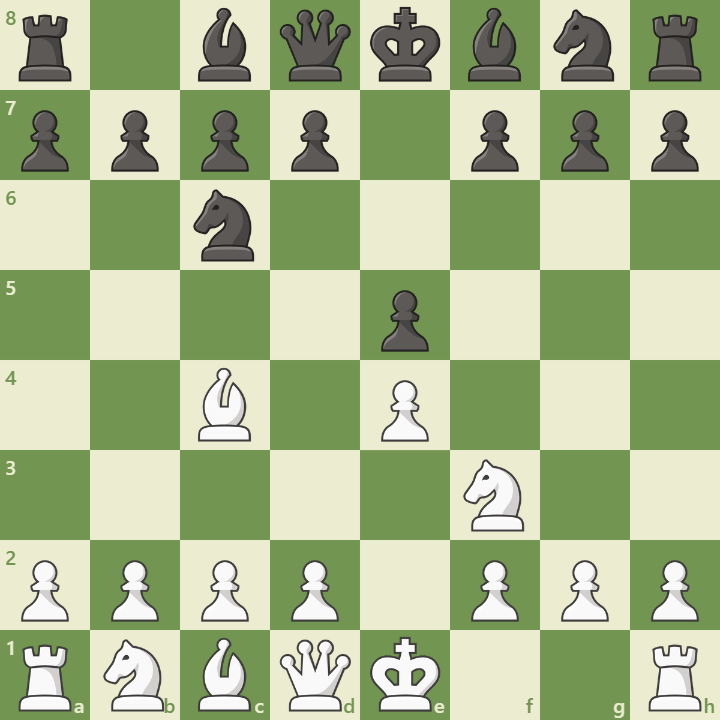

Overview
The Italian Game is one of the oldest and most respected chess openings, dating back to the 16th century. It begins with the moves:
1. e4 e5 2. Nf3 Nc6 3. Bc4
This setup targets the vulnerable f7 square and promotes rapid development and central control.
Opening Diagram
This position arises after 1.e4 e5 2.Nf3 Nc6 3.Bc4. White develops quickly and targets the f7 square, the weakest point in Black’s camp.
Main Variations
- Giuoco Piano: 3...Bc5 – A quiet game with balanced development.
- Two Knights Defense: 3...Nf6 – Leads to tactical lines like the Fried Liver Attack.
- Hungarian Defense: 3...Be7 – A solid but passive setup for Black.
Strategic Themes
The Italian Game emphasizes:
- Control of the center with pawns and pieces
- Pressure on the f7 square
- Early castling and king safety
- Flexible pawn structures for both sides